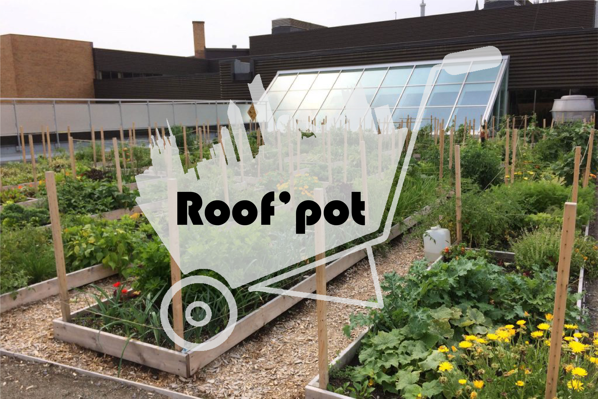
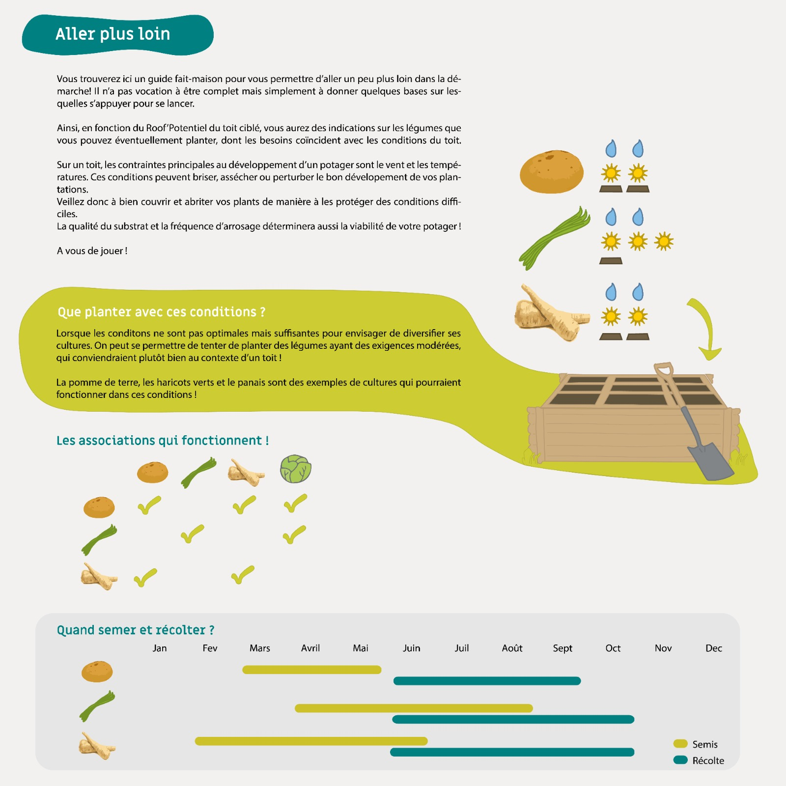
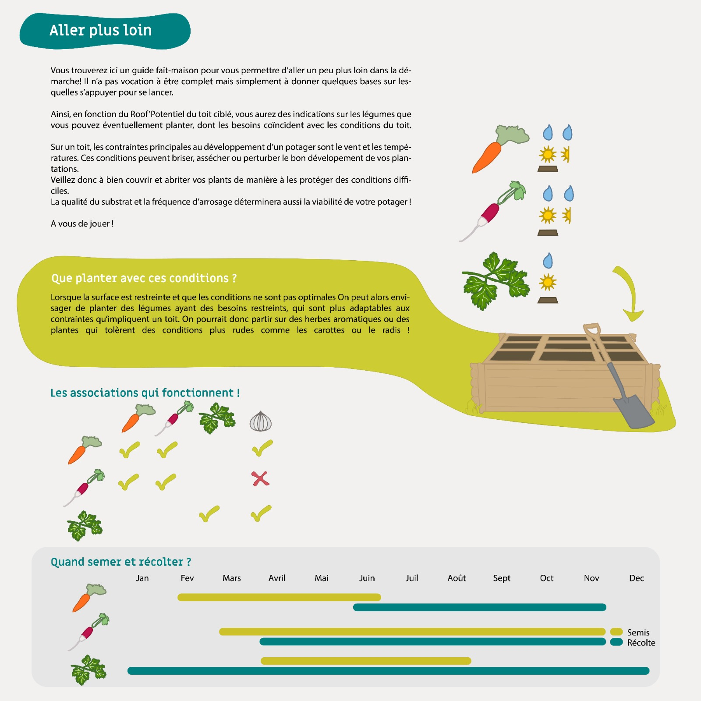
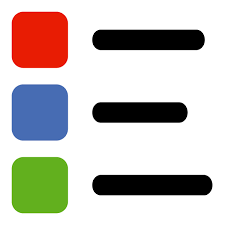

Roof'Pot

Bienvenue sur l'application Roof'Pot !
Roof’Pot est une application permettant à un large public d’explorer le monde des jardins partagés. Les utilisateurs bénéficient d’un parcours exploratoire en deux phases. Roof'Pot est un jeu de mot autour du Rooftop qui sont souvent occupé par des bars ou restaurant. Le Roof'Pot est donc Roof le toit, et pot qui fait référence au terme de potager mais aussi de potentiel.
Premièrement une cartographie sur les initiatives déjà existantes et leurs localisations. Dans un second temps ils pourront explorer les toits plats de la ville de Lyon afin de voir quels sont leurs potentiels pour construire de nouveaux jardins partagés. Cette analyse de potentiel basée sur une méthode de scoring et fournit un outil d’aide à la décision pour des particuliers ou des professionnels soucieux de ramener une production agricole à l’échelle locale et de l’amélioration du confort de vie en ville par végétalisation.
Bienvenue sur l'application Roof'Pot !
Roof’Pot est une application permettant à un large public d’explorer le monde des jardins partagés. Les utilisateurs bénéficient d’un parcours exploratoire en deux phases. Roof'Pot est un jeu de mot autour du Rooftop qui sont souvent occupé par des bars ou restaurant. Le Roof'Pot est donc Roof le toit, et pot qui fait référence au terme de potager mais aussi de potentiel.
Premièrement une cartographie sur les initiatives déjà existantes et leurs localisations. Dans un second temps ils pourront explorer les toits plats de la ville de Lyon afin de voir quels sont leurs potentiels pour construire de nouveaux jardins partagés. Cette analyse de potentiel basée sur une méthode de scoring et fournit un outil d’aide à la décision pour des particuliers ou des professionnels soucieux de ramener une production agricole à l’échelle locale et de l’amélioration du confort de vie en ville par végétalisation.
Bonne exploration !
Qui sommes nous ?
Bastien CASTELLO
Camille SCHEFFLER
Léopold ROBITAILLE
Victor DOMEJEAN
Camille SCHEFFLER
Léopold ROBITAILLE
Victor DOMEJEAN
Master GeoNum (Promotion 2019/2021)
Les différents types de jardins :
Il y a trois grand type de jardins : partagés, familiaux et d'insertion.
Les jardins familiaux : Les jardins familiaux ou jardins ouvriers, sont « des lotissements de parcelles gérés par une association mis à disposition des jardiniers afin qu’ils en jouissent pour leurs loisirs et les cultivent pour les besoins de leur famille, à l’exclusion de tout usage commercial » (Définition de la Fédération Nationale des Jardins Familiaux). Le terme de jardins familiaux a progressivement remplacé celui de jardins ouvriers.
Les jardins partagés : Un jardin partagé est un jardin écologiquement conçu, construit, et cultivé collectivement par les habitants d’un immeuble, d’une structure, d’un quartier ou d’un village. Les projets de jardins partagés comportent tous des valeurs de solidarité, de mixité sociale, de liens généreux avec la terre et les humains, de convivialité et de plaisir.
Les jardins d'insertion : Il s'agit d'un terrain de 2000 à 3000 m² mis à disposition par une commune, il est cultivé collectivement, il est destiné à des personnes en difficulté de vie, il leur permet de faire une étape de socialisation et de construction de projet de vie ou professionnel, ils cultivent pour leur alimentation familiale.
Les jardins familiaux : Les jardins familiaux ou jardins ouvriers, sont « des lotissements de parcelles gérés par une association mis à disposition des jardiniers afin qu’ils en jouissent pour leurs loisirs et les cultivent pour les besoins de leur famille, à l’exclusion de tout usage commercial » (Définition de la Fédération Nationale des Jardins Familiaux). Le terme de jardins familiaux a progressivement remplacé celui de jardins ouvriers.
Les jardins partagés : Un jardin partagé est un jardin écologiquement conçu, construit, et cultivé collectivement par les habitants d’un immeuble, d’une structure, d’un quartier ou d’un village. Les projets de jardins partagés comportent tous des valeurs de solidarité, de mixité sociale, de liens généreux avec la terre et les humains, de convivialité et de plaisir.
Les jardins d'insertion : Il s'agit d'un terrain de 2000 à 3000 m² mis à disposition par une commune, il est cultivé collectivement, il est destiné à des personnes en difficulté de vie, il leur permet de faire une étape de socialisation et de construction de projet de vie ou professionnel, ils cultivent pour leur alimentation familiale.
Nos fiches jardins :
Résultat de l'analyse potentiel :
Avec cette surface, on peut produire une quantité de légume équivalente aux besoins de :
NB : La consommation annuelle moyenne de légumes et des 127kg/personne/an.

Nos fiches jardins :
Résultat de l'analyse potentiel :
Avec cette surface, on peut produire une quantité de légume équivalente aux besoins de :
NB : La consommation annuelle moyenne de légumes et des 127kg/personne/an.

Nos fiches jardins :
Résultat de l'analyse potentiel :
Avec cette surface, on peut produire une quantité de légume équivalente aux besoins de :
NB : La consommation annuelle moyenne de légumes et des 127kg/personne/an.

Création et pondération du Roof'Potentiel :
Dans cette fenêtre nous vous présenterons des détails concernant la construction du Roof'Potentiel et de sa signification.
Les paramètres pris en compte sont : L'exposition, la surface, la soliditéet la pluviométrie.
Ces paramètres sont reclassifiés selon une méthode des quantiles de 0 à 5 afin d'avoir une échelle commune. Nous avons donc une note sur 20.
Cette note est ensuite rapportée sur 100 et constitue notre Roof'Potentiel initiale.
Il est possible de faire varier ce Roof'Potentiel sur la surface sélectionnée grâce aux boutons variateurs. Ils permettent de modifier la pondération de chaque critère du Roof'Potentiel.
Il est possible de mettre en avant les critères en leur donnant une pondération supérieure à 1 ou de les inhiber en leur donnant une pondération de 0.5 ou de les annuler par un 0.
Le bouton Valider permet de lancer votre nouvelle pondération. Le bouton Réinitialiser permet de remettre tous les critères avec une pondération de 1.
Les paramètres pris en compte sont : L'exposition, la surface, la soliditéet la pluviométrie.
Ces paramètres sont reclassifiés selon une méthode des quantiles de 0 à 5 afin d'avoir une échelle commune. Nous avons donc une note sur 20.
Cette note est ensuite rapportée sur 100 et constitue notre Roof'Potentiel initiale.
Il est possible de faire varier ce Roof'Potentiel sur la surface sélectionnée grâce aux boutons variateurs. Ils permettent de modifier la pondération de chaque critère du Roof'Potentiel.
Il est possible de mettre en avant les critères en leur donnant une pondération supérieure à 1 ou de les inhiber en leur donnant une pondération de 0.5 ou de les annuler par un 0.
Le bouton Valider permet de lancer votre nouvelle pondération. Le bouton Réinitialiser permet de remettre tous les critères avec une pondération de 1.
Mode comparaison des toits plats :
Dans cette fenêtre nous vous présenterons des détails concernant la comparaison des toits plats.
Les paramètres pris en compte sont : Le roof'potentiel, la surface, l'ensoleillement et le type de propriété du toit.
Pour commencer à comparer des toits plats entre eux, selectionne les depuis la carte en cliquant simplement dessus et observe leurs différences. Pour déselectionner un toit clique à nouveau dessus.
Tu peux ajouter autant de toit à la comparaison que tu le souhaites. Les toits sont identifiés par un numéro, tu peux retrouver ce numéro en posant ta souris sur un toit.
Pour déselectionner tous les toits appuie sur le bouton sous le tableau.
Pour quitter le mode comparaison et revenir à une visualisation toit par toit, clique sur le bouton "Quitter le mode comparaison" mais avant selectionne au moins un toit histoire de tater un peu l'outil ;).
Une moyenne des différentes variables est proposée. Bonne découverte !
Les paramètres pris en compte sont : Le roof'potentiel, la surface, l'ensoleillement et le type de propriété du toit.
Pour commencer à comparer des toits plats entre eux, selectionne les depuis la carte en cliquant simplement dessus et observe leurs différences. Pour déselectionner un toit clique à nouveau dessus.
Tu peux ajouter autant de toit à la comparaison que tu le souhaites. Les toits sont identifiés par un numéro, tu peux retrouver ce numéro en posant ta souris sur un toit.
Pour déselectionner tous les toits appuie sur le bouton sous le tableau.
Pour quitter le mode comparaison et revenir à une visualisation toit par toit, clique sur le bouton "Quitter le mode comparaison" mais avant selectionne au moins un toit histoire de tater un peu l'outil ;).
Une moyenne des différentes variables est proposée. Bonne découverte !
